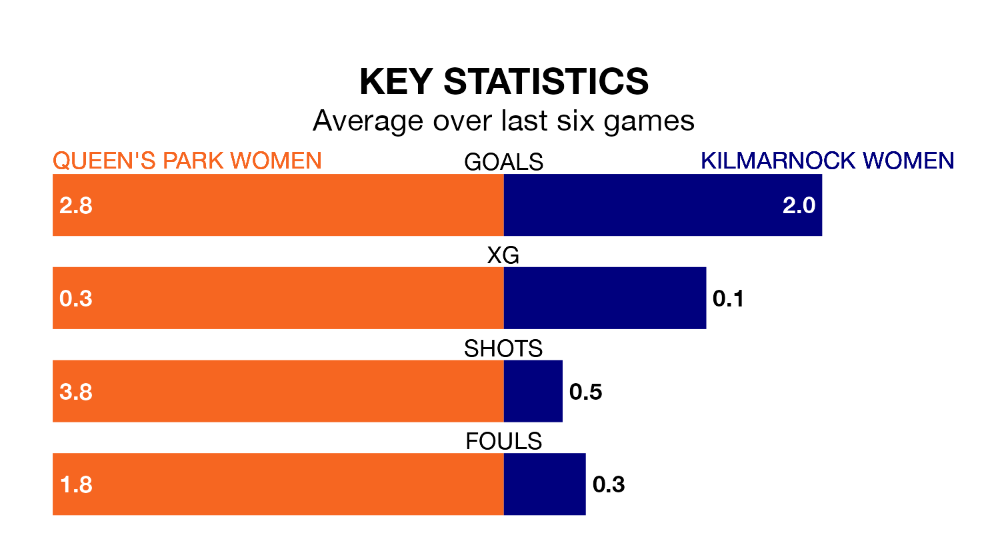

SWPL 2's top two sides face each other at Lochinch Pavilion in Sunday's kick-off, when Queen's Park Women host second-placed Kilmarnock Women.
Queen's Park have picked up 21 wins and two draws from 25 games so far this season, and sit 20 points above the visitors going into the 3pm match.
Kilmarnock, meanwhile, have won 13 and drawn six, picking up 45 points.
With 88 goals in 25 games so far this season, Queen's Park are the league's highest scorers with 3.5 goals per game. And they are conceding fewer than average, letting in 18 goals at a rate of 0.7 per game.
Kilmarnock are also above average scorers, with 2.5 goals per game, compared to a league average of 1.8. They have conceded 1.3 goals per game.
The hosts are in exceptional form in SWPL 2, with six wins and no losses from their last six games.
With two wins and two draws over that period, the away team's form is much worse – they have taken eight points from 18, compared to Queen's Park's 18.
In the last 10 years, Queen's Park and Kilmarnock have played each other on 13 occasions. They won five each, and they drew three times.
On average, Queen's Park scored 1.2 goals and Kilmarnock 1.5 in those matches.
Their last meeting was on March 3, when they played out a 0-0 draw.
Queen's Park's last match was on Wednesday, a 1-0 win against St. Johnstone Women, with getting the goal for Queen's Park.
Kilmarnock drew 2-2 with Gartcairn Women last time out, also on Wednesday, with on the scoresheet.
Updated: 12:00 (UTC), 02/05/24